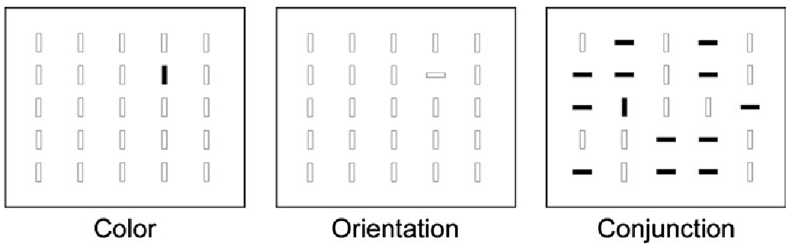

Attention, Perception, & Psychophysics, Vol. 75 – Published March 2013
By 2013, it was already well established that first-person shooter (FPS) players outperform non-players on tasks involving spatial attention, multiple object tracking, and divided attention. Wu and Spence set out to ask a more specific question: how does action game experience translate into better visual search? And critically, does it change the efficiency of early, parallel processing – or only the speed of later, serial item-by-item inspection?
To answer this, the authors distinguished between two types of classic visual search. In feature search, the target differs from all distractors in a single feature (e.g., a blue bar among red bars), causing it to "pop out" immediately regardless of how many distractors are present – producing a flat, near-zero search slope. In conjunction search, the target shares features with the distractors (e.g., a blue vertical bar among blue horizontal and red vertical bars), so attention must be deployed item by item, producing a positive search slope. Prior work had shown that FPS players had faster conjunction search; what was unknown was whether they were also faster in feature search – where there is, in principle, nothing left to optimise in the serial stage.

The study also introduced a dual search task to simulate the real demands of an action game: participants had to simultaneously perform a central letter discrimination and identify a briefly flashed peripheral stimulus, testing how well they could divide attention between two locations at once.
Thirty-six male undergraduates were classified as FPS players (n = 19, minimum 4 hours per week for 6 months) or non-players (n = 17, no FPS play in the past 3 years). All participants completed both the classic visual search task (Experiment 1A) and the dual search task (Experiment 1B) in the same session.
Participants searched arrays of 9, 16, or 25 coloured bars for a target that differed from the distractors in colour only (feature), orientation only (feature), or both colour and orientation (conjunction). The key measure was reaction time as a function of set size – the slope of this function indicates how efficiently attention is guided to the target.
Players were faster than non-players across all three search conditions (560 ms vs. 625 ms overall). The important finding was that this advantage held for feature search as well as conjunction search, even though feature search is already efficient with near-flat slopes even in non-players. The search slopes did not differ between groups in the feature searches – meaning the players' advantage was entirely in the intercept, not the slope. This rules out a faster item-by-item processing speed as the explanation. Instead, the authors interpret the intercept reduction as evidence of improved top-down guidance: players appear to form a better internal target template that directs attention more precisely right from the start of each search.
Participants performed a central letter identity task and a peripheral target identification task simultaneously. The peripheral target was either a simple bar (easier) or a letter (harder, requiring more attentional resources to identify). Players were more accurate in both components of the dual search (83% vs. 79% in the peripheral component; 77% vs. 70% in the central component), and responded faster in the peripheral component (1,209 ms vs. 1,413 ms). Notably, the players' advantage was equally large for bars and letters, suggesting their benefit came from better spatial location of the peripheral target rather than from superior identification once found.
To establish causality, 60 non-players (30 male, 30 female) were randomly assigned to 10 hours of training on one of three games:
| Group | Game | Genre |
|---|---|---|
| FPS | Medal of Honor: Pacific Assault | First-person shooter |
| Driving | Need for Speed: Most Wanted | Racing / driving action game |
| Control | Ballance | 3-D puzzle game |
All participants completed the classic search and dual search tasks before and after training. Including a driving game as a second action condition was a deliberate design choice: racing games share the core demands of FPS games (fast-moving objects, the need to locate and identify targets quickly, divided attention) but differ in surface content, allowing the researchers to test whether the active cognitive ingredients – rather than the FPS genre specifically – drive the training effects.
Both the FPS group (601 ms → 535 ms) and the driving group (598 ms → 521 ms) became meaningfully faster, while the control group improved only modestly (569 ms → 538 ms). The improvements were statistically larger in the two action game groups than in the control group, and did not differ from each other. Crucially, just as in Experiment 1A, the gains involved decreases in the search intercepts rather than in the slopes – confirming that 10 hours of action game play was sufficient to improve top-down guidance, not merely item-processing speed.
In the peripheral component of the dual search, accuracy improved in the FPS group (79% → 84%) and the driving group (77% → 81%), but barely changed in the control group (79% → 80%). Again, the advantage was equal for bars and letters, consistent with improved location of the peripheral target via top-down attention guidance rather than enhanced identification. All three groups became faster in the speed measures, but this overall speed gain did not differentiate among groups and likely reflects general practice effects.
No gender-related differences in training effects were found in any analysis, which is noteworthy given that the cross-sectional sample was exclusively male.
The central theoretical contribution of Wu and Spence (2013) is the intercept argument. Because feature search is already highly efficient – the target pops out and search time barely increases with more distractors – any speed advantage in feature search cannot come from processing individual items faster. The only viable explanation is that the action game players have developed a more precise and effective target template: a top-down representation of what they are looking for that pre-activates the relevant regions of the attentional priority map, directing the very first deployment of attention more accurately.
The equivalence of FPS and driving game effects is also theoretically important. It suggests that the critical training ingredient is not the specific genre or content of the game, but rather the shared perceptual and attentional demands: rapidly moving objects, the constant need to locate and prioritise targets in a cluttered scene, and time pressure. This finding has practical implications, because driving games carry a lower age rating and wider demographic appeal than FPS games – making them potentially more suitable as cognitive training tools for older adults or populations who would not engage with violent content.
The study fits squarely within the larger pattern documented by Bediou et al. (2023): the clearest and most consistent benefits of action game training concentrate in top-down attention and perception, precisely the domains that the game mechanics directly exercise. The intercept-based evidence from Wu and Spence provides one of the cleaner mechanistic accounts of why this happens.
Wu, S., & Spence, I. (2013). Playing shooter and driving videogames improves top-down guidance in visual search. Attention, Perception, & Psychophysics, 75(4), 673–686. https://doi.org/10.3758/s13414-013-0440-2